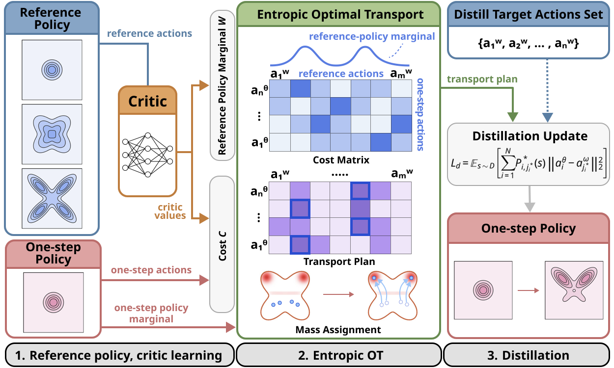

Scholar
Scholar
 Email
Email
 LinkedIn
LinkedIn

Learning Multimodal One-step Flow Policy via Value-weighted Optimal Transport
Dexterous Manipulation · Humanoid Learning · Embodied AI
I'm Jinha Choi, an undergraduate student at Yonsei University, South Korea, majoring in Computer Science and Nano Science and Engineering and expected to graduate in February 2027.
I am currently advised by Prof. Yonghyeon Lee at RoPhi Lab at Yonsei University, working on high-DoF dexterous manipulation incorporating physics- and control-informed priors toward generalizable robot intelligence for unstructured environments and real-world deployment. Previously, I was a research intern at HuGeLab at KAIST, advised by Prof. Beomjoon Kim, where I worked on real-world deployment of humanoid locomotion policies. I also worked at DILLab at Yonsei University, advised by Prof. Jongmin Lee, on efficient one-step policy extraction from multi-step behavior-cloning flow policies via optimal transport.


Learning Multimodal One-step Flow Policy via Value-weighted Optimal Transport

When AI Co-Scientists Fail: SPOT — a Benchmark for Automated Verification of Scientific Research
Humanoid Deployment — Locomotion
Advised by Prof. Beomjoon Kim
Deployed trained locomotion policies on Unitree G1 and a custom 108 kg humanoid through simulation training, sim-to-sim validation, and sim-to-real evaluation.
Franka Panda Teleoperation Data Collection
Advised by Prof. Beomjoon Kim
Integrated a Franka Panda with a 3D mouse, Touch haptic device, and Meta Quest for teleoperated demonstration collection.
Humanoid Fixed-Base Manipulation
Advised by Prof. Youngwoon Lee
Investigated PPO exploration limits for humanoid fixed-base manipulation in massively parallel simulation. Evaluated PPO variants, including SAPG and EPO, against standard PPO and analyzed methods for improving exploration.
A1-Challenge Autonomous Driving Competition
Qualified in Nov 2025 · 4th Place · Ministry of Trade and KIAPI
Developed an end-to-end racing policy in the MORAI simulator. Built behavioral-cloning and DAgger baselines using targeted corner-case data, then explored reinforcement learning to improve robustness and driving performance.
Physical AI Robotics Hackathon — Single Arm Manipulation
Kernel Academy and Doosan Robotics
Built a speech-guided pick-and-place pipeline using a Doosan E0509 arm, RGB-D sensing, Whisper, SAM2, GPT-4o-based reasoning, and ROS2. Added calibrated 3D localization, task verification, and error-recovery logic.

Language-Conditioned Image Inpainting with LLMs and Diffusion Models
OUTTA AI Bootcamp Project
Developed a language-conditioned image editing pipeline using a pretrained LLM to extract clothing attributes, semantic segmentation to localize garments, and diffusion-based inpainting to synthesize the specified appearance.
Korea Defense Intelligence Command — Translator
Military Service
Translated classified documents and interpreted classified meetings for KDIC and partner agencies, including the National Intelligence Service and the U.S. National Geospatial-Intelligence Agency.
VEX Robotics — World Championship
Team Lead, 1010B, WVSS Robotics
Led a 12-member team through strategy, mechanical and electrical design, programming, autonomous control, and competitive driving across three VEX Robotics seasons, including the World Championship.
Hyundai NGV Robotics Track H-Mobility Class Certificate
Mar – Jul 2026 · Hyundai NGV
Completed Hyundai's Robotics Track, a program focused on robotics and robot learning, and received the H-Mobility certificate from Hyundai.
2nd Place — Physical AI 26H Robotics Hackathon
Kernel Academy & Doosan Robotics
Built a natural-language-guided pick-and-place system on a Doosan E0509 robot arm using RGB-D sensing, vision-language reasoning (GPT-4o, SAM2, Whisper), and ROS2 execution. Contributed to Isaac Sim environment setup, camera calibration, domain randomization, and real-robot transfer. Won 2nd place among university teams.
Top Award — Korea Defense Intelligence Command AI Security Competition
Awarded by Major General Sangho Moon (OF-7), Commander, KDIC
Proposed an on-device AI framework for military systems with partial internet exposure, designed to support operational convenience while strengthening protection against security vulnerabilities and malicious misuse.
Honor Roll
Awarded by the President of Yonsei University
1st Place — Yonsei–Nexon RC Creative Platform
RC Education Center, Yonsei University · 1st of 90 teams · $10K prize
Led a 5-member team in a university-wide social-impact startup competition co-hosted with Nexon. Designed an automated revolving-door assistance system for people with mobility impairments — developed a 3D-printed prototype and presented the design rationale to judges and organizers.
Science Division Finalist — VEX Robotics World Championship
Kentucky, USA · Team 1010B · 600 qualified teams worldwide
Ranked as Science Division finalist (top finish within a 100-team division), advancing to the division final against the top teams from other divisions.
1st Place — VEX Robotics Canada BC Provincial Championship
British Columbia, Canada · Team 1010B, WVSS Robotics
Led Team 1010B to 1st place at BC Provincials, earning qualification to the VEX Robotics World Championship. Directed the full development cycle — game strategy, mechanical and electrical design, programming, and competitive driving — across three competition seasons.
Feel free to reach out for research discussions, collaboration, or general inquiries.